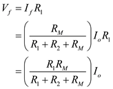

The input resistance of the op-amp is very high. So assume,

Hence, consider the modified circuit as shown in Figure 2.
Refer to the circuit diagram of trans-conductance amplifier in Figure P10.28 in the textbook.
Consider the equivalent circuit as shown in Figure 1.
The input resistance of the op-amp is very high. So assume,
Hence, consider the modified circuit as shown in Figure 2.
Find the expression for  .
.
The output voltage of the circuit is,
From the circuit in Figure 2,

Hence,
 …… (1)
…… (1)
Thus, the expression for  is
is  .
.
Find the expression for  .
.
The voltage  is,
is,

Thus, the expression for is .
 .
. By Kirchhoff’s voltage law,
From equation (1),
Hence,
From the circuit in Figure 2,
Hence,
Thus, the expression for  is .
is .
If the loop gain is large, find an approximate expression for  .
.
If the loop gain is large, . Hence,
Thus, if the loop gain is large, the approximate expression for  is .
is .